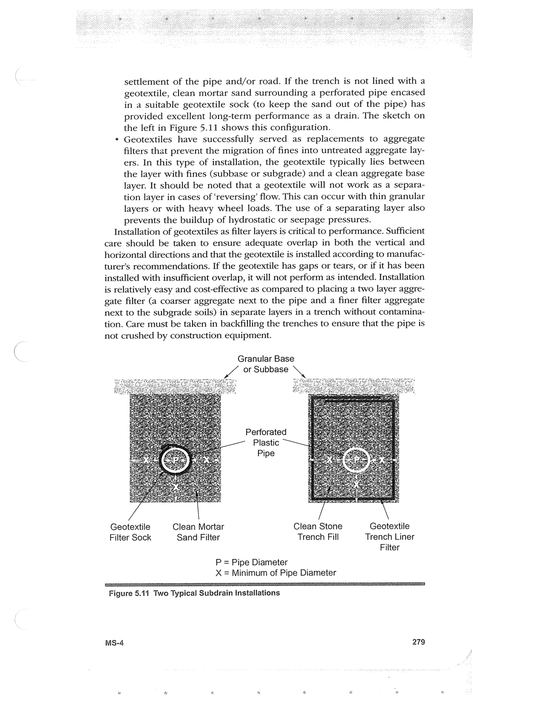

PDF page 313 · book page sequence 279


Searchable transcription
Unproofread OCR · 308 detected words; mean OCR confidence 95.59. Check technical values, symbols and table columns against the scan.
settlement of the pipe and/or road. If the trench is not lined with a geotextile, clean mortar sand surrounding a perforated pipe encased in a suitable geotextile sock (to keep the sand out of the pipe) has provided excellent long-term performance as a drain. The sketch on the left in Figure 5.11 shows this configuration.
* Geotextiles have successfully served as replacements to aggregate filters that prevent the migration of fines into untreated aggregate lay- ers. In this type of installation, the geotextile typically lies between the layer with fines (subbase or subgrade) and a clean aggregate base layer. It should be noted that a geotextile will not work as a separa- tion layer in cases of ‘reversing’ flow. This can occur with thin granular layers or with heavy wheel loads. The use of a separating layer also prevents the buildup of hydrostatic or seepage pressures.
Installation of geotextiles as filter layers is critical to performance. Sufficient
care should be taken to ensure adequate overlap in both the vertical and
horizontal directions and that the geotextile is installed according to manufac- turer’s recommendations. If the geotextile has gaps or tears, or if it has been installed with insufficient overlap, it will not perform as intended. Installation is relatively easy and cost-effective as compared to placing a two layer aggre- gate filter (a coarser aggregate next to the pipe and a finer filter aggregate next to the subgrade soils) in separate layers in a trench without contamina- tion. Care must be taken in backfilling the trenches to ensure that the pipe is
not crushed by construction equipment.
MS-4
Granular Base
Lo or Subbase \
Perforated Plastic Pipe Geotextile Clean Mortar Clean Stone Geotextile Filter Sock Sand Filter Trench Fill Trench Liner
Filter
P = Pipe Diameter X = Minimum of Pipe Diameter
Figure 5.11 Two Typical Subdrain Instaliations
279